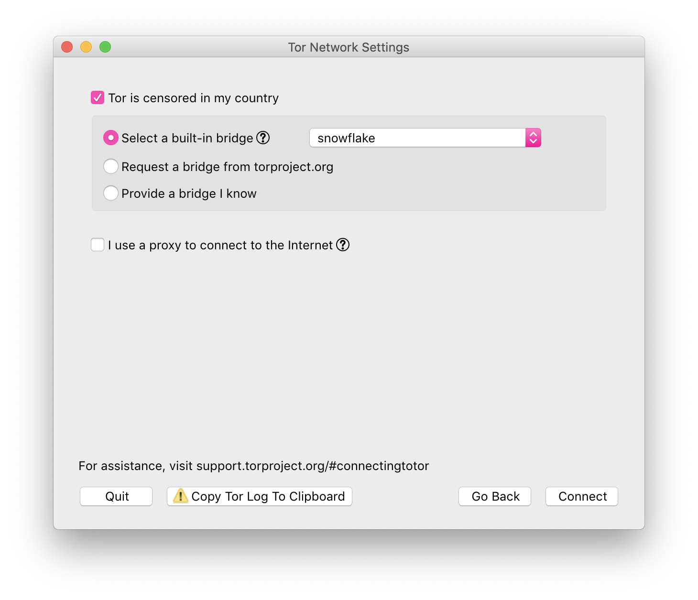

SNOWFLAKE

Snowflake is a system to defeat internet censorship. People who are censored can use Snowflake to access the internet. Their connection goes through Snowflake proxies, which are run by volunteers. For more detailed information about how Snowflake works see our documentation wiki.
Browser
If your internet access is censored, you should download Tor Browser.

Extension
If your internet access is not censored, you should consider installing the Snowflake extension to help users in censored networks. There is no need to worry about which websites people are accessing through your proxy. Their visible browsing IP address will match their Tor exit node, not yours.
Reporting Bugs
If you encounter problems with Snowflake as a client or a proxy, please consider filing a bug. To do so, you will have to,
- Either create an account or log in using the shared cypherpunks account with password writecode.
- File a ticket using our bug tracker.
Please try to be as descriptive as possible with your ticket and if possible include log messages that will help us reproduce the bug. Consider adding keywords snowflake-webextension or snowflake-client to let us know how which part of the Snowflake system is experiencing problems.
Embed
It is now possible to embed the Snowflake badge on any website:
Which looks like this: